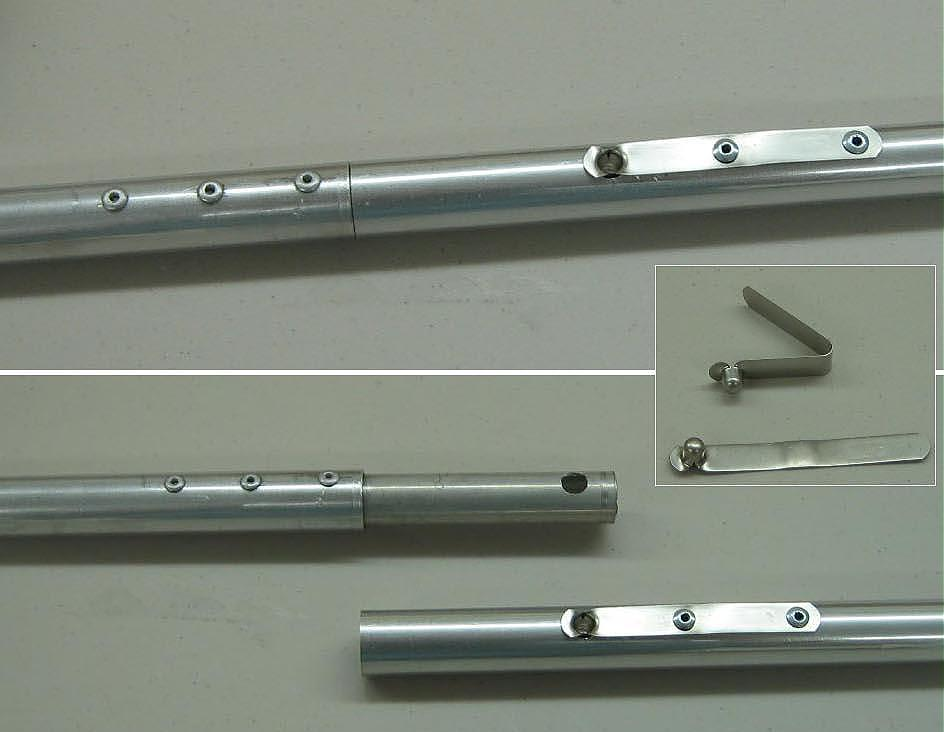

| Sonnet 16 | Menu Last Page Next Page |
|

Snap Buttons - Only the keel uses snap buttons to connect the aluminum tubes. Normally, they fit inside the tube and have a bent shape as seen above. This interferes with the shock cords that run through the tubing. To correct this, the snal buttons are straightened in a vice, and riveted to the outside of the tubes. 5/16" holes are first drilled through the 3/4" stringer tubes and the 5/8" inserts. When the tubes are connected, the buttons locks the tubes together. The reason for using snap buttons on the Sonnet keel is to keep the bent stems from falling over when the keel is being inserted under the forward and aft deck skin during assembly. The side stringers use only shock cords. This technique was contributed by Steve Ulrich.
|
|